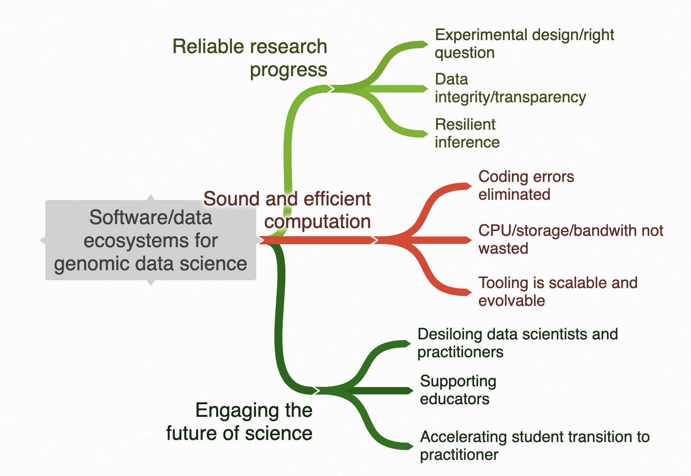

|  |
Vince Carey, Ph.D., is Professor of Medicine at Channing Division of Network Medicine, Mass General Brigham, Harvard Medical School. As a Fulbright Specialist and as an invited lecturer, he has given short courses in statistical genomics on four continents. He was an inaugural faculty member in the Cold Spring Harbor Laboratory Summer Course on statistical analysis of genome-scale data (2005-2010 and intermittently thereafter), and in 2009 was inaugural Editor-in-Chief of The R Journal. A founding contributor to the Bioconductor project in 2001, Vince is now MPI of the NHGRI U24 supporting core developer activities. He is also MPI of the NHGRI AnVIL cloud computing platform. Vince has led several Chan-Zuckerberg Initiative Essential Open Source Software projects addressing enhanced community support and inclusiveness. One outcome is the YESCDS curriculum for introductory genomic data science with applications to cancer. As of 2024 Vince is a member of the Scientific Advisory Board of the Vaccine and Immunology Statistical Center of the Collaboration for AIDS Vaccine Discovery, and of the External Advisory Board for NIAID ImmPort. |
||